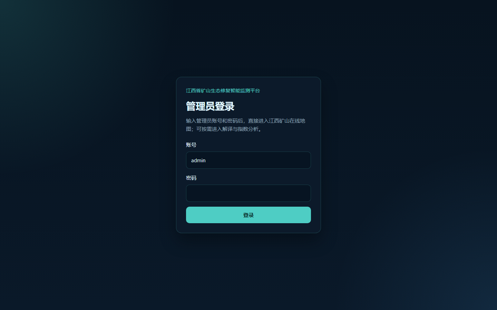
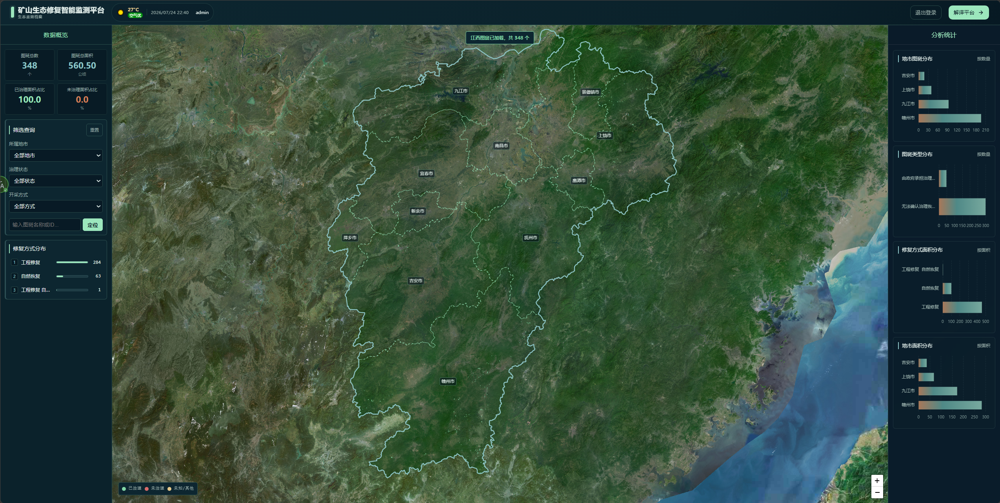
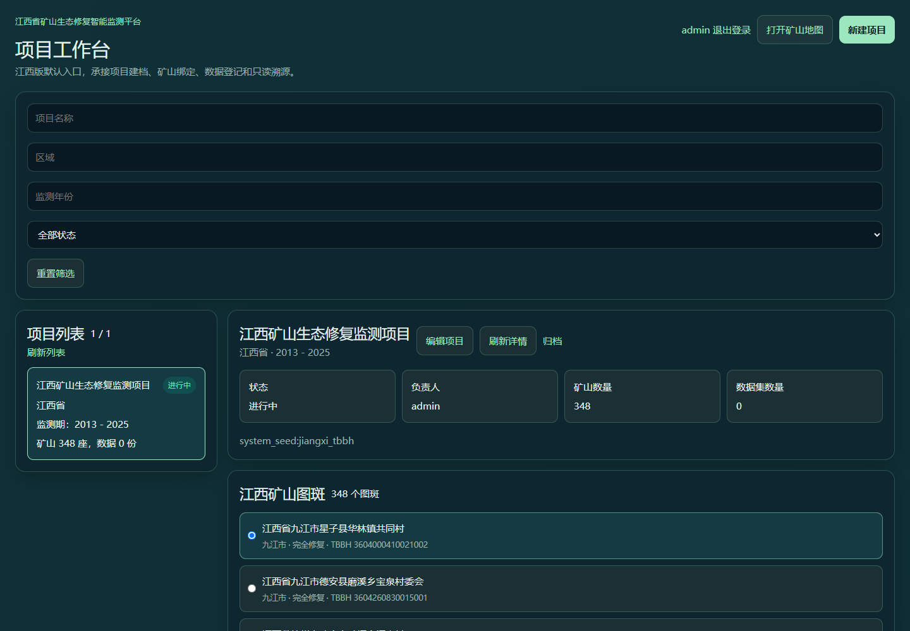
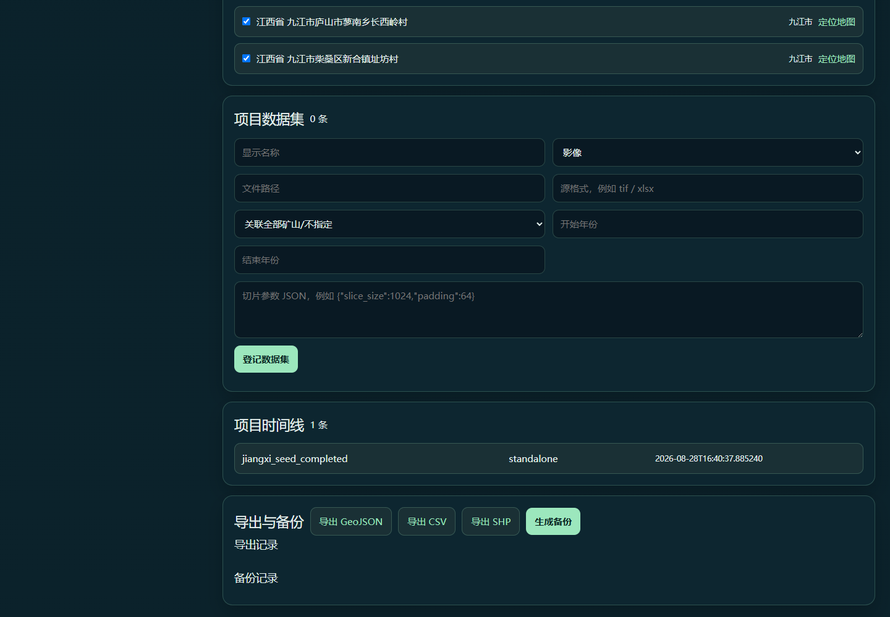

快速开始
在本机浏览器打开地图 http://127.0.0.1:4173/#/map，或打开解译平台 http://127.0.0.1:4174/#/segmentation。后端服务地址为 http://127.0.0.1:5178。
建议顺序：先登录，再按 TBBH 定位矿山；需要保留数据和成果时建立项目；再选择 ROI、地物分类或光谱指数流程；最后人工复核并导出。
登录与会话安全
由管理员通过安全方式分发登录凭据。两个前端共用会话：在其中一个前端登录后，可切换到另一个前端继续操作；退出登录会使该会话失效。

- 账号与密码输入区：在输入框中填写管理员分发的凭据。
- 登录按钮：确认信息无误后，点击“登录”进入平台。
矿山地图
何时使用
需要查看矿山分布、统计、生态诊断或历史趋势时使用地图。
前置条件
已登录并取得目标矿山的 TBBH、矿山名称或图幅号之一。
操作步骤
- 进入地图，查看统计与筛选条件。
- 用 TBBH、矿山名称或图幅号搜索。
- 定位到要素后打开详情，检查生态诊断与趋势信息。

- 筛选查询区：按 TBBH、矿山名称或图幅号检索，并按需要设置筛选条件。
- 地图定位区：定位目标要素，再结合页面结果进行判读。
- 右侧统计与详情区：查看当前可见数据的汇总和相关信息。
成功标志
地图定位到目标矿山，详情中可读取对应的诊断或已有历史记录。
注意事项与失败处理
- 没有 TBBH：向业务数据提供方核实后再检索，避免按相近名称误匹配。
- 没有历史结果：这表示当前未提供可读的历史记录，不应据此推断变化结论。
- map_fid 映射缺失：请记录 TBBH 和出现位置，交由维护人员补齐技术定位映射。
- 数据损坏：停止使用该条结果，保留页面提示和 TBBH，交由维护人员核查源数据。
项目工作台
何时使用
需要把多个矿山、数据集、时间线和处理成果组织为可追溯任务时使用。
前置条件
已确定项目名称、所涉 TBBH 与允许使用的数据集。
操作步骤
- 新建项目并填写必要说明。
- 按 TBBH 绑定矿山，添加数据集并整理时间线。
- 在需要时编辑项目；完成后归档。可导出 GeoJSON、CSV 或 SHP，并创建或恢复备份。

- 顶部筛选区：按项目名称、区域、年份或状态筛选项目。
- 左侧项目列表：选择需要查看或操作的项目。
- 项目概览区：核对项目状态、负责人、矿山数量和数据集数量。
- 矿山图斑绑定区：按 TBBH 核对已绑定的矿山对象。

- 项目数据集区：登记数据集信息，并按实际情况关联矿山和时间范围。
- 导出与备份区：执行导出、生成备份或恢复备份前，先确认当前项目对象和范围。
成功标志
项目中显示正确的 TBBH 绑定、数据集与时间线，导出文件或备份恢复结果可被复查。
注意事项与失败处理
TBBH 是业务身份；map_fid 仅用于技术地图/历史输出定位。项目绑定、交接和成果追溯均以 TBBH 为准。归档前确认项目不再需要编辑；导出后抽查字段；恢复备份后重新核对矿山绑定和时间线。
ROI 解译
何时使用
需要针对明确范围比较旧、新影像，并进行单年或双年解译时使用。
前置条件
准备可用的 KML 范围文件，以及对应的旧影像和新影像。
操作步骤
- 上传或选择 KML，检查范围位置。
- 选择旧、新影像，并选择单年或双年模式。
- 提交任务，等待状态完成后读取结果；任务失败时记录页面提示与输入范围。
成功标志
任务状态完成，结果与输入影像年份、范围和模式能够对应。
注意事项与失败处理
范围偏移、影像缺失或任务失败时，不将空白或局部结果作为结论。先检查 KML 边界、影像年份和任务提示，再重新提交。
地物分类
何时使用
需要对选定影像生成地物分类图层并下载处理结果时使用。
前置条件
已选择可用影像来源，且页面显示的范围、年份等参数符合本次任务。
操作步骤
- 选择影像来源并核对页面可见参数。
- 运行 GPU 推理，等待任务状态返回。
- 复核输出图层，按需要下载结果。
成功标志
任务完成且输出可预览、下载；人工复核后记录可用范围和疑点。
注意事项与失败处理
草地、森林、建筑、道路、裸地、水体是模型标签，不是地面真值。参数不符、输出异常或任务失败时，先保留任务信息并核对影像来源与范围，再决定是否重跑。
光谱指数
何时使用
需要按影像来源、指数类型、年份和 TBBH 查看指数结果时使用。
前置条件
已确定数据源、指数、年份和目标 TBBH。
操作步骤
- 选择来源、指数和年份，输入或选择 TBBH。
- 运行计算并等待完成。
- 预览当前结果，并在历史记录中核对已有任务。
成功标志
预览和历史记录均能对应本次 TBBH、年份和指数选择。
注意事项与失败处理
不同数据源和年份的可比性需要人工判断。若没有结果或历史记录不一致，先核对 TBBH、年份与数据源，再提交问题给维护人员。
结果判读
所有输出都需要人工复核；它们是解译示例，不构成精度评估或地面调查结论。
判读时请区分：原始影像呈现地表观测；模型分类显示模型标签；黄色 ROI 边界表示分析范围；道路类别是模型分类中的一种标签。黄色 ROI 边界不是道路。
- 草地
- 森林
- 建筑
- 道路
- 裸地
- 水体
管理员巡检
以下仅用于安全的只读或可逆检查。检查前保留可回滚的容器，不执行删除、卷移除、数据库清理、模型变更或密钥处理操作。
查看容器：
docker ps --filter name=geoview-jiangxi-gpu打开健康检查：http://127.0.0.1:4173/api/health/jiangxi。
curl --fail http://127.0.0.1:4173/api/health/jiangxi- 本次交付的当前基线示例为：
status ok、mine_count 348、geojson_count 348、unique_tbbh_count 348、tbbh_duplicate_count 0、asset_manifest true与model_device cuda:0；请将实际返回值与当前部署基线比对，不要将这些数值视为永久通用保证。 - 核对资源清单与工作进程显示值。
- 查看最近日志：
docker logs --tail 200 geoview-jiangxi-gpu。 - 异常处理前确认回滚容器仍被保留，并记录检查时间和现象。
常见问题与术语
TBBH 是什么？
TBBH 是矿山业务身份，用于检索、项目绑定、交接和成果追溯。
为什么搜索不到目标？
先核对 TBBH、矿山名称或图幅号；若仍不能定位，记录查询条件与页面提示，由数据维护人员核查。
ROI 是什么？
ROI 是本次分析所选择的感兴趣区域。它是范围标记，不等同于道路或分类类别。
为什么同一矿山会有不同年份结果？
影像来源、采集时间、范围与处理任务可能不同。比较前需确认这些条件一致或记录差异。
登录后出现 401 或共享会话失效怎么办？
返回登录页重新登录；若页面提示仍显示会话异常，记录页面提示、发生时间和操作路径，交由维护人员核查。
TBBH 存在但没有历史结果怎么办？
先记录 TBBH、查询条件和页面提示，确认时间范围与业务筛选是否一致；仍无结果时交由维护人员核查历史数据是否已入库。
map_fid 映射缺失怎么办？
记录 TBBH、当前页面提示和涉及的 map_fid，由维护人员补核技术定位映射；不要用技术编号替代业务主键。
数据文件损坏怎么办？
立即停止使用该文件，保留错误现象、校验结果和文件来源，交由维护人员使用受控副本核查或恢复。
地物分类结果加载失败怎么办？
记录任务信息、页面提示和影像来源，确认当前任务关联的结果是否完整；随后交由维护人员核查任务输出。
manifest（资产清单）是什么？
manifest（资产清单）记录运行数据资产的来源、版本与校验摘要等信息，用于启动或导入前核对资产是否完整一致。
GPU Worker 是什么？
GPU Worker 是用于地物分类推理的后台工作进程，负责在服务端处理已提交的分类任务并返回明确状态。
map_fid 是什么？
map_fid 是用于技术定位和历史输出关联的技术编号；TBBH 是业务主键，检索、项目绑定和成果追溯均以 TBBH 为准。